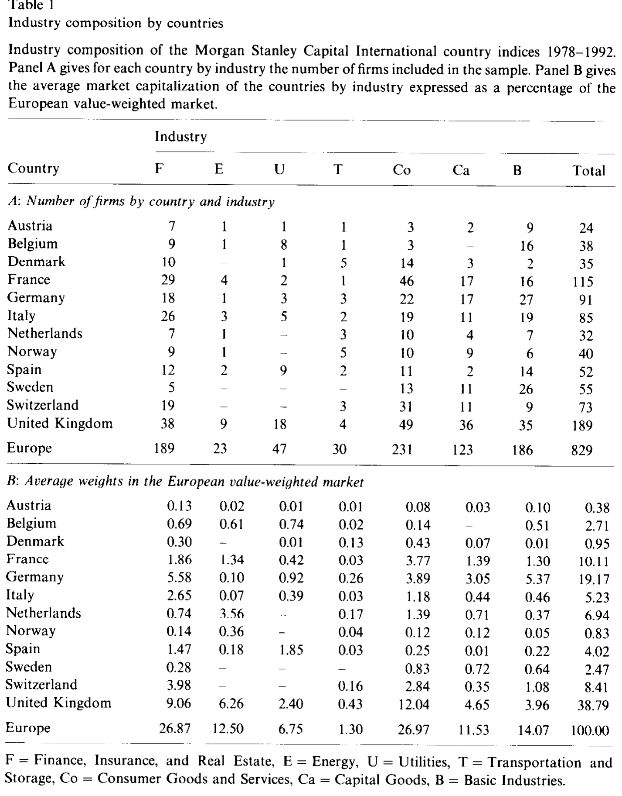
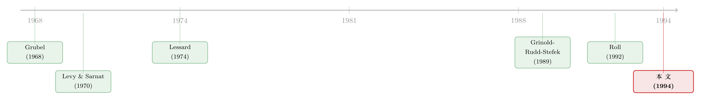

你分散到全世界，到底分散掉的是「行业」还是「国家」？
本文读的是 Heston & Rouwenhorst (1994, Journal of Financial Economics)：用 1978–1992 年 12 个欧洲国家、829 家公司的个股月度数据，把每只股票的收益拆成「行业效应」与「国家效应」两块。结论干净得有点反直觉——各国股市之间之所以相关性低，几乎完全是国家特有冲击造成的；行业结构的差异只能解释国家指数波动率横截面差异的不到 1%。换句话说，在一个行业里跨国分散，比在一个国家里跨行业分散，是好得多的降险工具。
1 一个被广泛相信、却从没被干净检验的故事
国际分散投资为什么有用？教科书上的答案几十年没变：各国股市彼此相关性不高，把鸡蛋放进不同国家的篮子，能在不牺牲收益的前提下压低组合波动。自 Grubel (1968)、Levy 和 Sarnat (1970)、Solnik (1974) 第一次把这件事写成数字，学界和业界就反复念叨这条「低相关」。
但「为什么低」却一直是笔糊涂账。一种很顺嘴的解释是：因为各国的产业结构不一样。买瑞士市场，等于在银行股上押了一注重仓；买荷兰市场，等于在能源股上押了一注重仓。既然不同行业本身就不完全相关，那么行业构成不同的两个国家，自然也就不完全相关了——这就是 Roll (1992) 那篇很有影响力的论文的核心论点。顺着这条逻辑，国际分散的好处，有一大块其实是行业分散偷偷带来的；而某些市场更波动，也只是因为它装了更多波动更大的行业（比如能源比银行抖）。
接着，一个自然的问题是：除了产业结构，还有没有别的解释？当然有。一国的货币与财政政策、法律与制度环境、区域性的经济冲击，都会给本国收益注入大量国家特有 (country-specific) 的波动。这一派的看法是：荷兰和瑞士的股市相关性低，不是因为瑞士的银行更多，而是因为两国的银行业各自承受着互不相干的本国冲击。在这种世界里，行业之间的相关性甚至可以很高——只要国家冲击足够大，把行业效应淹没掉就行。
然后，问题就卡在了这里：这两种解释，长得太像，却谁也没把对方逼到墙角。
2 老办法为什么说不清
早期想回答这个问题的论文——Lessard (1974, 1976)、Solnik 和 de Freitas (1988)、Grinold、Rudd 和 Stefek (1989)、Drummen 和 Zimmermann (1992)——做法大同小异：把个股收益对全球因子、行业因子、国家因子做回归，再看哪一类因子解释了更多的方差。它们几乎一致地得出「国家因子占主导」，但每一篇又都给行业因子留了一个显著的位置。
可这些结果其实难以解读。要害在于：它们用行业组合的收益去近似行业因子，用国家指数的收益去近似国家因子。但如果各国的产业构成本就不同，那么国家指数里就混进了行业效应，行业指数里也混进了国家效应。两把尺子彼此污染，最后量出来的「国家 vs 行业」之争，自然谁也说不服谁。
这是全文真正的方法论关节：要干净地分开「国家」和「行业」，你不能拿现成的国家指数和行业指数互相比划——它们早就互相沾染了。你必须回到个股这一层，在一个统一的回归里同时把两者识别出来。
但真正关键的一步在于：作者手里有 829 只个股的收益，以及每只股票的国别与行业归属。这意味着，他们可以绕开被污染的指数，直接在个股层面做一个虚拟变量分解。这正是本文的核心贡献。
3 识别策略：一个朴素到优雅的虚拟变量分解
设第 \(i\) 只股票属于行业 \(j\)、国家 \(k\)，本文把它在第 \(t\) 期的收益写成：
$$R_{it} = \alpha_t + \beta_{jt} + \gamma_{kt} + e_{it}$$
其中 \(\alpha_t\) 是当期的基准收益，\(\beta_{jt}\) 是行业效应，\(\gamma_{kt}\) 是国家效应，\(e_{it}\) 是公司特有扰动。这个设定允许行业和国家各自独立地影响收益，但排除了两者的交互项。
把它改写成可估计的形式，就是对行业虚拟变量 \(Z_{ij}\)（\(i\) 属于行业 \(j\) 取 1，否则取 0）和国家虚拟变量 \(C_{ik}\) 各跑一遍横截面回归：
$$R_i = \alpha + \beta_1 Z_{i1} + \cdots + \beta_7 Z_{i7} + \gamma_1 C_{i1} + \cdots + \gamma_{12} C_{i12} + e_i$$
问题来了：这个回归没法直接估。因为 7 个行业虚拟变量加起来是一个全 1 向量，12 个国家虚拟变量加起来也是全 1 向量——存在完全多重共线性。本质原因是：每家公司恰好属于一个国家、一个行业，所以你只能测量行业之间、国家之间的横截面差异，没有一个天然的「绝对水平」。
要破局，就得选一个基准。最笨的办法是拿德国的资本品行业当基准、令它的 \(\beta\) 和 \(\gamma\) 为零；但那样所有系数都只能相对于一个被随意挑中的角落来读，别扭。本文用了一个漂亮得多的归一化——让行业效应与国家效应都相对于欧洲等权市场这个「平均公司」来度量。具体而言，对每一期 \(t\) 施加约束：
$$\sum_{j=1}^{7} n_j\,\beta_j = 0, \qquad \sum_{k=1}^{12} m_k\,\gamma_k = 0$$
其中 \(n_j\)、\(m_k\) 分别是行业 \(j\) 和国家 \(k\) 里的公司数。（John Long 建议了这一点；它只改变系数的解读、不影响模型的统计性质，残差完全相同。）
这套约束有一个极漂亮的副产品：截距 \(\alpha\) 的最小二乘估计恰好等于欧洲等权市场的收益。于是 \(\alpha + \beta_j\) 就是「行业 \(j\) 的纯行业收益」——一个国别构成与欧洲等权指数完全相同、因而剥离了国家效应的地理分散组合的收益；对称地，\(\alpha + \gamma_k\) 是国家 \(k\) 的纯国家收益——一个行业构成与欧洲市场相同、因而剥离了行业效应的组合的收益。
把这套逻辑反过来用，就能把任意一国的实际等权指数 \(R_{kt}^{EW}\) 拆成三块：
这条式子把那笔糊涂账算清了：西班牙的收益之所以偏离欧洲市场，只有两个原因——一是它的产业构成和欧洲不一样（\(a2\)）；二是同一行业里，西班牙的公司就是和别国的公司表现不同（\(a3\)）。值权重版本只需把普通最小二乘换成以市值为权的加权最小二乘，并把约束改成 \(\sum_k v_k\gamma_k = 0\)、\(\sum_j w_j\beta_j = 0\)，截距随之变成欧洲值权指数。
逐月重跑这个横截面回归，就能得到一整条「地理分散的行业收益」\(\alpha_t+\beta_{jt}\) 和「行业分散的国家收益」\(\alpha_t+\gamma_{kt}\) 的时间序列。剩下要做的，只是比较这两条序列谁的方差更大。
4 数据：12 个国家，829 家公司，一条「壳牌」的警示
样本是 Morgan Stanley Capital International（MSCI）12 个欧洲国家成份股的月度总收益，区间 1978–1992，最终 829 家公司。收益统一折算成德国马克 (Deutschmark) 计价，按月、以百分比表示。行业按 Financial Times（FT）Actuaries/Goldman Sachs 的分类归入 7 个大类：金融保险地产、能源、公用事业、运输仓储、消费品与服务、资本品、基础工业。
数据一摊开，就能看到产业结构在各国之间高度不均。瑞士四分之一以上的公司在金融业，瑞典却不到一成；公用事业扎堆在英国，运输股集中在丹麦、挪威这些小市场。而一旦看市值而非公司数，画面又变了样：能源股只占全样本公司数的不到 3%，却占了 12.50% 的市值——更夸张的是，荷兰那唯一一只能源股（Royal Dutch Shell）一家就占了荷兰市场市值的一半以上、占整个能源行业的 25% 以上、占全欧洲市值的 3.56%。这条「壳牌警示」后面会回来咬一口值权结果。
如表 1 所示，这种「公司数」与「市值」两副面孔的对比，正是本文识别能奏效的前提——各国产业结构差异越大，行业效应越有机会「冒头」，而结论越有说服力。

Table 1
收益本身的差异也很扎眼：挪威和意大利市场的波动率几乎是瑞士的两倍。更重要的是那组相关性数字——值权国家指数之间的平均相关性只有 0.407，等权为 0.434。这就是「低相关」的实证起点。但作者顺手算了另一组数字：直接构造的欧洲行业组合之间，相关性全为正，且高得多——值权 0.714，等权 0.757。
这一对照已经先给 Roll (1992) 出了个难题。Roll 从国家指数里估出的「全球行业因子」常常强烈负相关，可个股、乃至国际分散组合，平均都是正相关的——一旦你能用个股直接搭出行业组合，那种负相关就消失了。
5 主要结果：国家几乎是全部，行业几乎是零
把月度回归跑完、比较方差，结论一边倒。
先看国家指数的分解（表 3 上半部分）。对等权国家指数而言，行业构成效应的方差，平均只有国家指数超额收益方差的 0.6%（跨国平均：行业构成项方差 0.14，相对市场的比率 0.006；纯国家效应方差 24.18，比率 1.008）。也就是说，把各国指数之间的差异几乎 100% 记到了「国家」头上，「行业构成」连一个零头都算不上。换算成作者的话：对等权国家指数，不到 1% 的横截面差异能由行业专业化来解释。
为什么这么小？一部分是因为各国指数本身已经在行业上做了分散。但更要命的原因，藏在行业指数的分解里（表 3 下半部分）：纯行业效应的平均方差是 5.43（百分比的平方），远小于纯国家效应的平均方差 24.18。除了能源这一个例外，所有纯行业效应的方差都比纯国家效应小。说白了——国家这台「冲击发生器」的功率，比行业大了好几倍。
值权结果方向相同、量级略大：行业构成能解释的比率从 0.6% 升到 7.1%（方差 1.28，比率 0.071）。这个上升基本就是壳牌一家撑起来的——当一只能源巨无霸占了荷兰一半市值，值权指数自然会被它带出一点行业色彩。但即便如此，7.1% 依旧是个小数，国家效应仍是绝对主角。
于是反转出现：那条被广泛相信的「国际分散 = 行业分散」的故事，被一个朴素的虚拟变量分解证伪了。真正在驱动各国股市「各走各路」的，是国家特有的冲击，而不是它们装了什么行业。由此推出一条对投资极有用的不对称结论——
在一个行业里跨国分散，比在一个国家里跨行业分散，是有效得多的降险工具。 因为国家维度上有大量互不相干的特有波动可供分散，而行业维度上的可分散波动要小得多，且行业彼此还高度正相关。
最后，作者追问了一句：这些「国家效应」到底是什么？他们检验了汇率——结果发现，只有一小部分国家特有的收益波动能归因于汇率变动。也就是说，把货币折算的影响剥掉之后，国家效应依然顽固地存在。这个「国家效应到底从哪儿来」的谜，本文诚实地留给了后人。（关于汇率与各国股市之间那根看不见的传声筒，可参见《汇率，是股市之间那根看不见的传声筒》。）
6 文献脉络
把这条线索摊开看，它的演进相当清晰。最早的一拨人——Grubel (1968)、Levy 和 Sarnat (1970)、Solnik (1974)——负责把「国际分散有好处」这件事记成数字，确立了「各国低相关」这个待解释的事实。

接着是「解释派」。Lessard (1974, 1976) 最先把行业因子请进国家收益的分析；Solnik 和 de Freitas (1988)、Grinold-Rudd-Stefek (1989)、Drummen 和 Zimmermann (1992) 用多因子回归反复确认「国家因子主导、但行业也显著」。这一派的共同软肋，是用被污染的指数互相代理。Roll (1992) 则站到了另一端，把产业结构抬到了解释低相关的中心位置——它既是本文最重要的对话对象，也是被本文直接反驳的靶子。本文 (1994) 的位置，就是用个股层面的干净分解，给这桩二十年的公案做了一次了断：国家压倒行业。
这条「国家 vs 行业 vs 全球」的争论此后并未停歇。它后来长出了「Fama-French 因子到底是全球的还是各国各自的」这一脉问题（可参见《Fama-French 因子是「全球」的，还是「各回各家」的？》），以及「相关性会不会在熊市里抱团」这一脉对静态相关性的修正（可参见《分散投资的『退潮时刻』：当相关性在熊市里抱成一团》）。
7 评论与延伸（Q&A + 研究方向）
(a) 几个可能的疑问
Q：本文和 Roll (1992) 用的几乎是同一套数据、同样的 7 个行业分类，为什么结论完全相反？
差别全在「用什么估行业因子」。Roll 从国家指数里反推全球行业因子，而国家指数本身混着国家效应，于是估出来的「行业因子」被国家冲击污染，甚至出现强负相关。本文用 829 只个股直接搭行业组合，行业相关性立刻变成全正、且高达 0.71。同一个问题，换了把没被污染的尺子，答案就翻了过来。
Q：「行业效应方差只占 0.6%」，会不会只是因为只用了 7 个粗行业，太粗了所以测不出来？
这是最值得担心的一点，作者也承认行业分类只有 7 大类。更细的行业划分可能会抬高行业效应的份额。但有两点缓冲：一是本文样本恰恰是产业构成差异很大的欧洲国家，按理最有利于「行业派」；二是即便如此，国家效应方差仍是纯行业效应的四五倍，要靠细分把这个差距填平，难度很大。所以「粗分类」会削弱、但难以推翻结论。
Q：等权结果说行业只占 0.6%，值权却到 7.1%，该信哪个？
两个都真实，只是问的问题不同。值权那 7.1% 几乎全由壳牌一只股票撑起——它说明「当某国市值高度集中在一个特殊行业时，行业构成会留下可见的指纹」。但对绝大多数国家、绝大多数时点，国家效应依然主导。把壳牌这类极端集中的个案放一边，等权的 0.6% 更能代表普遍规律。
Q：所谓「国家效应」，是不是其实就是汇率？
不是。作者专门检验了汇率，发现只有一小部分国家特有波动能由汇率解释。即使全部用德国马克计价、把货币波动剥掉，国家效应依旧顽固。这恰恰是本文留下的最大悬念：国家效应来自货币、财政、法律、制度还是区域冲击，本文识别出了它，却没拆开它。
Q：模型把行业与国家设成可加、无交互，这个假设会不会太强？
会，而且这是设定上的硬约束（\(R_{it}=\alpha_t+\beta_{jt}+\gamma_{kt}+e_{it}\) 里没有 \(\beta\times\gamma\) 项）。现实中「德国的银行业」未必等于「德国效应 + 银行效应」。不过加可加性是为了让国家与行业效应可识别所付的代价；交互项会重新引入识别难题。把它理解为一阶近似更合适。
Q：这套结论今天还成立吗？欧元区一体化之后呢？
本文样本停在 1992 年、欧元尚未诞生。随着货币统一、财政规则趋同、市场一体化加深，理论上国家特有冲击应当变小、国家效应应当下降。后续不少研究确实发现欧洲内部国家效应在收缩、行业效应在上升。所以本文的「国家压倒行业」是一个带时代标签的结论，而非永恒定律——这反倒让它成了一个很好的、可被时间检验的基准。
(b) 几个可能的研究问题与提案
1. 把同样的分解搬到国际公司债 / 信用利差上。 【经济故事】股票市场里国家效应压倒行业，那么信用市场呢？公司债的违约与利差，既受发行国宏观（利率、汇率、主权风险）影响，也受发行人所在行业的景气影响。一个很自然的猜想是：信用市场里国家/主权效应可能比股票更强（主权利率是所有本国信用的地板）。【可行性】中。需要跨国公司债数据（如 TRACE 配合国际债券库）、发行人国别与行业归属，照搬本文的虚拟变量分解即可，识别策略现成；难点在跨国债券价格的可比性与流动性调整。
2. 用本文方法测「国家效应随一体化而衰减」的时间趋势。 【经济故事】如果国家效应真由货币、财政、制度的独立性驱动，那么欧元启动、欧盟扩容应当系统性压低国家效应、抬升行业效应。把 \(\gamma_{kt}\) 的横截面方差做成一条到今天的长时间序列，就能直接「看见」一体化对分散收益的侵蚀。【可行性】高。数据可得性好（MSCI/Datastream 个股延续至今），方法完全照搬，且有清晰的事件（1999 欧元、历次东扩）可做断点。
3. 国家效应与外资持有人的关系。 【经济故事】国家特有冲击若部分来自资本流动，那么 \(\gamma_{kt}\) 的波动应当和外资进出同步——外资集体撤离一国时，该国所有行业一起被砸，正是「国家效应」的微观来源之一。把估出的国家效应对外资净流入做回归，可以给「国家效应到底是什么」补上一块拼图。【可行性】中。需要国别层面的外资持仓/流量数据（如各国托管统计或 EPFR），识别上要处理流量与收益的内生性，但方向明确、可做。（这一脉与《外资真是「蝗虫」吗？》、《外资是「追涨」的，但真正可怕的是他们「赖着不走」》相通。）
4. 流动性维度上的「国家 vs 行业」分解。 【经济故事】本文拆的是收益，但同样的逻辑可以拆流动性的共同性 (commonality in liquidity)：一只股票变难卖，是因为「它所在的国家」整体流动性枯竭，还是因为「它所在的行业」遇冷？若国家维度同样主导，则跨国分散对流动性风险也有效。【可行性】中。需要个股层面的流动性度量（Amihud、价差）与国别/行业归属，套用本文分解；挑战在于流动性度量的跨国可比与微观结构差异。
8 我的判断
这是一篇方法胜于数据、思想胜于花哨的论文。它的真正贡献不是那串数字，而是那个识别上的洞见：要分清国家与行业，就别用被污染的指数互相比划，回到个股、用一个带恰当归一化的虚拟变量回归，让国家与行业效应各自相对于「平均公司」被干净地读出来。这个分解此后被无数国际资产定价研究反复借用，简洁、透明、可复制——这正是它能成为经典的原因。
要说对识别的担忧，我有三点。其一，可加无交互的设定是硬约束，现实中国家与行业大概率有交互，本文测到的是一阶效应。其二，7 个粗行业可能系统性低估行业份额，虽然方向上削弱不了主结论，但量级会受影响——我更想看到用细分行业重做一遍的稳健性。其三，也是最重要的，本文识别出了国家效应，却没有解释它：剥掉汇率之后剩下的那一大块「国家特有波动」究竟是货币政策、财政、法律还是区域冲击，全留成了黑箱。
后续我最想看到的，是把这条「国家压倒行业」的结论沿两个方向推到底：一是时间方向——欧元与一体化是否真的把国家效应磨平了，这是对本文机制最直接的检验；二是资产方向——在公司债与信用市场里，国家（主权）效应是否比在股票里更强。如果信用市场的答案是「国家效应更强」，那么本文这条简单的不对称——跨国分散胜过跨行业分散——在固定收益里会有比股票更硬的版本。
参考文献
- Beckers, S., Grinold, R., Rudd, A., & Stefek, D. (1992). The relative importance of common factors across the European equity markets. Journal of Banking and Finance 16, 75–95.
- Drummen, M., & Zimmermann, H. (1992). The structure of European stock returns. Financial Analysts Journal 48, 15–26.
- Grinold, R., Rudd, A., & Stefek, D. (1989). Global factors: Fact or fiction? Journal of Portfolio Management 16, 79–88.
- Grubel, H. G. (1968). Internationally diversified portfolios: Welfare gains and capital flows. American Economic Review 58, 1299–1314.
- Heston, S. L., & Rouwenhorst, K. G. (1994). Does industrial structure explain the benefits of international diversification? Journal of Financial Economics 36(1), 3–27.
- Lessard, D. R. (1974). World, national and industry factors in equity returns. Journal of Finance 29, 379–391.
- Lessard, D. R. (1976). World, country and industry relationships in equity returns: Implications for risk reduction through international diversification. Financial Analysts Journal 32, 32–38.
- Levy, H., & Sarnat, M. (1970). International diversification of investment portfolios. American Economic Review 60, 668–675.
- Roll, R. (1992). Industrial structure and the comparative behavior of international stock market indices. Journal of Finance 47, 3–42.
- Solnik, B. (1974). Why not diversify internationally rather than domestically? Financial Analysts Journal 30, 48–54.
- Solnik, B., & de Freitas, A. (1988). International factors of stock price behavior. In S. J. Khoury & A. Ghosh (Eds.), Recent developments in international banking and finance. Lexington Books.